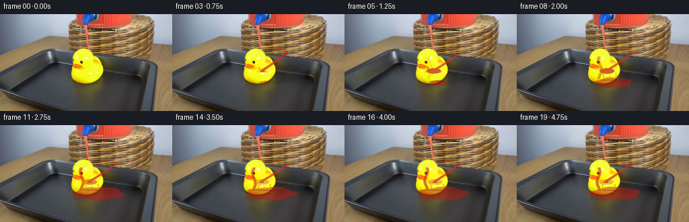
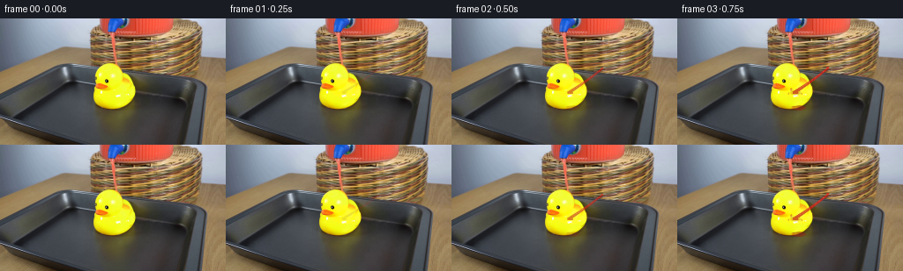
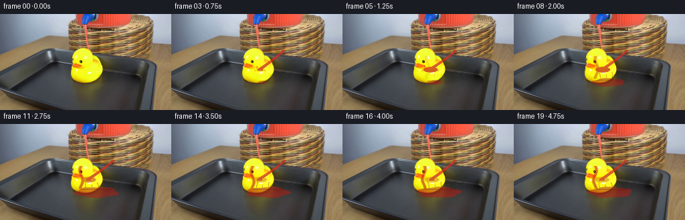

CODING AGENTS AS PIXEL WORLD MODELS
traex/DeepSeek-V4.1-Flash · 0087
点击播放 · 原生 RGB 像素
逐轮保存的候选
回放视频、检查图与代码变化。
每份候选均可单独播放。实际图片检查记录在下方工具轨迹中。
候选 01播放与检查图
点击播放 · 原生 RGB 像素


展开代码变化
--- 上一保存版本
+++ 本次保存版本
@@ -0,0 +1,192 @@
+from pathlib import Path
+
+import cv2
+import numpy as np
+from PIL import Image, ImageDraw
+
+import artifact_io
+
+
+ROOT = Path(__file__).resolve().parent
+W, H, N, FPS = 256, 144, 20, 4
+
+
+def smoothstep(edge0, edge1, value):
+ t = np.clip((value - edge0) / (edge1 - edge0), 0.0, 1.0)
+ return t * t * (3.0 - 2.0 * t)
+
+
+def ellipse(xx, yy, cx, cy, rx, ry, softness=0.8):
+ distance = np.sqrt(((xx - cx) / rx) ** 2 + ((yy - cy) / ry) ** 2)
+ extent = np.maximum(np.asarray(rx), np.asarray(ry))
+ return smoothstep(1.0 + softness / extent, 1.0 - softness / extent, distance)
+
+
+def make_static_assets(frame):
+ hsv = cv2.cvtColor(frame, cv2.COLOR_RGB2HSV)
+ r, g, b = frame.transpose(2, 0, 1).astype(np.float32)
+ hue, sat, val = hsv.transpose(2, 0, 1).astype(np.float32)
+
+ yellow = (
+ (hue >= 22)
+ & (hue <= 40)
+ & (sat > 105)
+ & (val > 100)
+ )
+ yellow = cv2.morphologyEx(yellow.astype(np.uint8), cv2.MORPH_CLOSE, np.ones((3, 3), np.uint8))
+ count, labels, stats, _ = cv2.connectedComponentsWithStats(yellow, 8)
+ duck = np.zeros((H, W), np.uint8)
+ for label in range(1, count):
+ x, y, width, height, area = stats[label]
+ if area > 500 and 90 < x < 180 and 40 < y < 120:
+ duck[labels == label] = 1
+ duck = cv2.morphologyEx(duck, cv2.MORPH_CLOSE, np.ones((5, 5), np.uint8))
+ duck = cv2.dilate(duck, np.ones((3, 3), np.uint8), iterations=1)
+
+ # The dispenser outlet is the lower front tip of the large glass vessel.
+ # Its red interior is intentionally excluded from the source-derived puddle mask.
+ tray = np.zeros((H, W), np.uint8)
+ tray[78:126, 82:222] = 1
+ vessel = ellipse(np.arange(W)[None, :], np.arange(H)[:, None], 172, 25, 48, 36, 2.0)
+ basket = (np.arange(H)[:, None] > 64) & (np.arange(W)[None, :] < 230)
+ puddle_surface = tray.astype(np.float32) * (1.0 - 0.82 * vessel) * (1.0 - 0.35 * basket)
+
+ # A restrained palette derived from the photograph's highlights and shadows.
+ luminance = frame.astype(np.float32).mean(axis=2, keepdims=True)
+ red = np.empty_like(frame, dtype=np.float32)
+ red[:, :, 0] = 226 - 0.18 * np.abs(luminance[:, :, 0] - 120)
+ red[:, :, 1] = 42 + 0.11 * np.clip(luminance[:, :, 0] - 55, 0, 150)
+ red[:, :, 2] = 30 + 0.07 * np.clip(luminance[:, :, 0] - 45, 0, 160)
+ return duck.astype(np.float32), puddle_surface, red
+
+
+def draw_effect(frame, t, duck, puddle_surface, red_tint):
+ canvas = frame.astype(np.float32)
+ yy, xx = np.mgrid[:H, :W].astype(np.float32)
+
+ # Ease-in at the start; once flowing, the stream remains steady for the shot.
+ flow = smoothstep(0.10, 0.72, t)
+ impact = smoothstep(0.45, 1.35, t)
+ settle = smoothstep(0.70, 2.80, t)
+
+ # Glass outlet: approximately (176, 57), with the mouth pointing toward the duck.
+ mouth_x = 171.0 + 1.3 * np.sin(2.4 * np.pi * t)
+ mouth_y = 57.0 + 0.7 * np.sin(2.0 * np.pi * t + 0.3)
+ target_x = 133.0 + 1.1 * np.sin(1.1 * np.pi * t)
+ target_y = 83.0
+
+ # Tapered ballistic stream. The centerline leans left and bends under gravity.
+ vertical = np.clip((yy - mouth_y) / (target_y - mouth_y), 0.0, 1.0)
+ center = mouth_x + (target_x - mouth_x) * vertical + 5.0 * vertical * (1.0 - vertical)
+ half_width = (1.2 + 2.0 * vertical) * (0.72 + 0.28 * flow)
+ stream_mask = smoothstep(half_width + 1.05, half_width - 0.60, np.abs(xx - center))
+ stream_mask *= (yy >= mouth_y - 1.5) & (yy <= target_y + 2.0)
+ stream_mask *= flow
+
+ # Bright liquid core and a thin darker edge make the narrow stream legible.
+ core = smoothstep(1.35, 0.15, np.abs(xx - center - 0.35))
+ core *= (yy >= mouth_y) & (yy <= target_y)
+ core *= flow
+ stream_mask = np.maximum(stream_mask, 0.86 * core)
+
+ # Liquid clings to the duck's top and left contour after impact.
+ duck_core = cv2.erode(duck.astype(np.uint8), np.ones((3, 3), np.uint8), iterations=1).astype(np.float32)
+ top_surface = np.clip((yy - 62.0) / 28.0, 0.0, 1.0)
+ run_x = 128.0 - 7.0 * settle + 2.2 * np.sin(2.5 * np.pi * t + yy * 0.21)
+ run_mask = smoothstep(3.4, 1.0, np.abs(xx - run_x))
+ run_mask *= ((yy > 62.0) & (yy < 97.0)).astype(np.float32) * duck_core
+ run_mask *= settle * 0.78
+
+ # A compact crown at the first contact point, followed by two small side splashes.
+ crown_radius = 4.5 + 6.5 * impact
+ crown = ellipse(xx, yy, target_x, target_y + 1.0, crown_radius, 2.6 + 1.6 * impact, 1.1)
+ crown *= impact
+ crown *= (1.0 - smoothstep(1.9, 3.4, t) * 0.62)
+
+ splash_phase = smoothstep(0.55, 0.90, t) * (1.0 - smoothstep(1.20, 2.20, t))
+ for side, dx, dy, delay in ((-1, -8.0, -7.0, 0.0), (1, 8.5, -6.0, 0.08)):
+ phase = np.clip((t - 0.48 - delay) / 1.20, 0.0, 1.0)
+ px = target_x + side * (2.5 + 10.0 * phase)
+ py = target_y - 1.0 - (8.5 * phase - 5.5 * phase * phase)
+ drop = ellipse(xx, yy, px, py, 1.15, 1.7, 0.8)
+ drop += ellipse(xx, yy, px + side * 3.0, py + 4.0 + 4.0 * phase, 0.9, 1.2, 0.7) * 0.65
+ crown = np.maximum(crown, drop * splash_phase * (1.0 - 0.3 * phase))
+
+ # Puddle begins below the duck and grows slowly, with a non-uniform scalloped edge.
+ puddle_cx = 137.0 + 9.0 * settle
+ puddle_cy = 101.5
+ puddle_rx = 8.0 + 29.0 * settle
+ puddle_ry = 2.8 + 7.0 * settle
+ angle = np.arctan2((yy - puddle_cy) / np.maximum(puddle_ry, 0.1),
+ (xx - puddle_cx) / np.maximum(puddle_rx, 0.1))
+ scallop = 1.0 + 0.08 * np.sin(5.0 * angle + 0.7 * t * np.pi)
+ puddle = ellipse(xx, yy, puddle_cx, puddle_cy,
+ puddle_rx * scallop, puddle_ry * scallop, 1.5)
+ puddle *= smoothstep(0.20, 1.05, t)
+ puddle *= puddle_surface
+
+ # Wet sheen runs down the duck's breast and to the tray.
+ drip = np.zeros((H, W), np.float32)
+ for base_x, start_y, length, phase in ((128.0, 83.0, 22.0, 0.0),
+ (137.0, 91.0, 20.0, 0.7),
+ (146.0, 87.0, 17.0, 1.3)):
+ progress = smoothstep(0.65 + 0.22 * phase, 2.2 + 0.22 * phase, t)
+ end_y = start_y + length * progress
+ sx = base_x + 1.1 * np.sin(yy * 0.28 + t * 2.0 * np.pi + phase)
+ streak = smoothstep(1.1, 0.25, np.abs(xx - sx))
+ streak *= (yy >= start_y) & (yy <= end_y)
+ streak *= (duck_core > 0) | (yy > 94.0)
+ drip = np.maximum(drip, streak * 0.48 * progress)
+
+ liquid = np.maximum(stream_mask, run_mask)
+ liquid = np.maximum(liquid, crown)
+ liquid = np.maximum(liquid, puddle)
+ liquid = np.maximum(liquid, drip)
+ liquid = np.clip(liquid, 0.0, 0.92)
+
+ # Lighting: a saturated red body, dark red meniscus, warm translucent edge.
+ shade = np.clip((yy - 48.0) / 55.0, 0.0, 1.0)
+ tint = red_tint * (1.0 - 0.22 * shade[:, :, None])
+ tint += np.array([12.0, -5.0, -4.0], np.float32)
+ tint = np.clip(tint, 0.0, 255.0)
+ alpha = liquid[:, :, None]
+ canvas = canvas * (1.0 - 0.82 * alpha) + tint * (0.82 * alpha)
+
+ # Soft red bounce light on adjacent yellow plastic and metal.
+ bounce = ellipse(xx, yy, 137.0, 79.0, 19.0 + 12.0 * settle, 11.0 + 3.0 * settle, 2.5)
+ bounce *= (duck > 0) & (liquid < 0.10)
+ canvas += bounce[:, :, None] * np.array([13.0, -2.0, -3.0], np.float32)
+
+ # Meniscus and highlights: narrow, coherent strokes rather than noisy texture.
+ meniscus = ellipse(xx, yy, puddle_cx, puddle_cy - puddle_ry * 0.55,
+ puddle_rx * 0.87, 1.05, 0.65)
+ meniscus *= puddle
+ canvas[meniscus > 0.15] = (
+ canvas[meniscus > 0.15] * (1.0 - 0.35 * meniscus[meniscus > 0.15, None])
+ + np.array([82.0, 17.0, 12.0], np.float32) * (0.35 * meniscus[meniscus > 0.15, None])
+ )
+ highlight = smoothstep(0.52, 0.08, np.abs(xx - center + 0.9))
+ highlight *= (yy > mouth_y + 2.0) & (yy < target_y - 2.0) & (stream_mask > 0.2)
+ canvas += highlight[:, :, None] * np.array([26.0, 20.0, 13.0], np.float32) * flow
+
+ # Keep the fixed camera and scene edges stable; only the liquid state changes.
+ return np.clip(canvas, 0, 255).astype(np.uint8)
+
+
+def generate():
+ source = np.asarray(Image.open(ROOT / "first_frame.png").convert("RGB"))
+ assert source.shape == (H, W, 3)
+ duck, puddle_surface, red_tint = make_static_assets(source)
+
+ frames = [source.copy()]
+ for index in range(1, N):
+ t = index / FPS
+ frames.append(draw_effect(source, t, duck, puddle_surface, red_tint))
+ return np.stack(frames).astype(np.uint8)
+
+
+if __name__ == "__main__":
+ frames = generate()
+ assert frames.shape == (N, H, W, 3) and frames.dtype == np.uint8
+ assert np.array_equal(frames[0], np.asarray(Image.open(ROOT / "first_frame.png").convert("RGB")))
+ artifact_io.save(frames, ROOT)
候选 02播放与检查图
点击播放 · 原生 RGB 像素

展开代码变化
--- 上一保存版本
+++ 本次保存版本
@@ -70,16 +70,16 @@
settle = smoothstep(0.70, 2.80, t)
# Glass outlet: approximately (176, 57), with the mouth pointing toward the duck.
- mouth_x = 171.0 + 1.3 * np.sin(2.4 * np.pi * t)
- mouth_y = 57.0 + 0.7 * np.sin(2.0 * np.pi * t + 0.3)
- target_x = 133.0 + 1.1 * np.sin(1.1 * np.pi * t)
- target_y = 83.0
+ mouth_x = 168.0 + 1.0 * np.sin(2.4 * np.pi * t)
+ mouth_y = 55.0 + 0.5 * np.sin(2.0 * np.pi * t + 0.3)
+ target_x = 132.0 + 1.0 * np.sin(1.1 * np.pi * t)
+ target_y = 82.0
# Tapered ballistic stream. The centerline leans left and bends under gravity.
vertical = np.clip((yy - mouth_y) / (target_y - mouth_y), 0.0, 1.0)
center = mouth_x + (target_x - mouth_x) * vertical + 5.0 * vertical * (1.0 - vertical)
- half_width = (1.2 + 2.0 * vertical) * (0.72 + 0.28 * flow)
- stream_mask = smoothstep(half_width + 1.05, half_width - 0.60, np.abs(xx - center))
+ half_width = (1.55 + 2.25 * vertical) * (0.76 + 0.24 * flow)
+ stream_mask = smoothstep(half_width + 1.20, half_width - 0.65, np.abs(xx - center))
stream_mask *= (yy >= mouth_y - 1.5) & (yy <= target_y + 2.0)
stream_mask *= flow
@@ -113,16 +113,17 @@
crown = np.maximum(crown, drop * splash_phase * (1.0 - 0.3 * phase))
# Puddle begins below the duck and grows slowly, with a non-uniform scalloped edge.
- puddle_cx = 137.0 + 9.0 * settle
- puddle_cy = 101.5
- puddle_rx = 8.0 + 29.0 * settle
- puddle_ry = 2.8 + 7.0 * settle
+ puddle_cx = 136.0 + 8.0 * settle
+ puddle_cy = 102.0
+ puddle_rx = 7.0 + 25.0 * settle
+ puddle_ry = 2.5 + 5.5 * settle
angle = np.arctan2((yy - puddle_cy) / np.maximum(puddle_ry, 0.1),
(xx - puddle_cx) / np.maximum(puddle_rx, 0.1))
scallop = 1.0 + 0.08 * np.sin(5.0 * angle + 0.7 * t * np.pi)
puddle = ellipse(xx, yy, puddle_cx, puddle_cy,
puddle_rx * scallop, puddle_ry * scallop, 1.5)
puddle *= smoothstep(0.20, 1.05, t)
+ puddle *= 0.88 + 0.12 * smoothstep(1.5, 3.5, t)
puddle *= puddle_surface
# Wet sheen runs down the duck's breast and to the tray.
可观测工具轨迹
实际执行的命令与返回图片。
命令 1exit 0
/bin/bash -c "pwd && rg --files -g 'GENERATION_RULES.md' -g 'prompt.txt' -g 'first_frame.png' -g '"'!*.mp4'"' -g '"'!*.webm'"' | sort"
命令 2exit 0
/bin/bash -c "find . -maxdepth 2 -type f -printf '%p\\t%k KB\\n' | sort | head -200"
命令 3exit 0
/bin/bash -c 'cat GENERATION_RULES.md'
命令 4exit 0
/bin/bash -c 'cat prompt.txt'
命令 5exit 0
/bin/bash -c "sed -n '1,240p' artifact_io.py && printf '\\n--- player ---\\n' && sed -n '1,260p' player_template.html"
命令 6exit 127
/bin/bash -c "file first_frame.png && python3 - <<'PY'
from PIL import Image
im=Image.open('first_frame.png')
print(im.size, im.mode)
print(im.getpixel((0,0)), im.getpixel((im.width//2, im.height//2)), im.getpixel((im.width-1,im.height-1)))
PY"命令 7exit 0
/bin/bash -c "python3 - <<'PY'
from PIL import Image
import numpy as np
im=np.array(Image.open('first_frame.png').convert('RGB'))
print('shape',im.shape,'dtype',im.dtype)
print('mean',im.mean((0,1)),'std',im.std((0,1)),'min',im.min((0,1)),'max',im.max((0,1)))
# top colors exact
cols,cnt=np.unique(im.reshape(-1,3),axis=0,return_counts=True)
order=np.argsort(cnt)[-30:][::-1]
for c,n in zip(cols[order],cnt[order]): print(tuple(c),int(n),f'{n/im.shape[0]/im.shape[1]:.3%}')
PY"命令 8exit 0
/bin/bash -c "python3 - <<'PY'
from PIL import Image
import numpy as np
im=np.asarray(Image.open('first_frame.png').convert('RGB')).astype(float)
r,g,b=im.transpose(2,0,1)
import colorsys
# masks
masks={
'yellow':(r>100)&(g>80)&(b<100)&(r>g*1.03)&(g>b*1.3),
'red':(r>90)&(r>g*1.6)&(r>b*1.5)&(g<110),
'warm_brown':(r>55)&(r>g*1.05)&(g>b*1.05)&(r<210)&(g<170),
'cyan_glass':(b>r*1.08)&(b>g*1.03)&(b>100),
'gray_light':(r>110)&(abs(r-g)<20)&(abs(g-b)<25),
}
for k,m in masks.items():
ys,xs=np.where(m)
print(k,len(xs),'bbox', (xs.min(),ys.min(),xs.max(),ys.max()) if len(xs) else None)
# 64x36 grid classify average color
small=np.asarray(Image.fromarray(im.astype(np.uint8)).resize((64,36),Image.Resampling.BOX))
# ANSI colored blocks? print chars based HSV/colors
chars=[]
for y in range(36):
row=''
for x in range(64):
R,G,B=small[y,x]
mx=max(R,G,B); mn=min(R,G,B); sat=(mx-mn)/(mx+1e-6)
if mx<55: c=' '
elif R>1.45*G and R>1.3*B and R>100: c='R'
elif R>100 and G>80 and B<90 and R>G*1.05: c='Y'
elif B>R*1.1 and B>100: c='c'
elif R>G*1.08 and G>B*1.05 and R>70: c='w'
elif mx>145: c='.'
elif mx>95: c='+'
else: c='-'
row+=c
print(f'{y:02d} {row}')
PY"命令 9exit 0
/bin/bash -c "python3 - <<'PY'
from PIL import Image
import numpy as np
im=np.asarray(Image.open('first_frame.png').convert('RGB'))
# print dominant-color runs on key rows and columns
for y in [0,20,40,50,60,70,80,90,100,110,120,130,140]:
row=im[y]
# quantize to /16 and runs >2
q=(row//24)*24
runs=[]; s=0
for x in range(1,257):
if x==256 or not np.array_equal(q[x] if x<256 else None,q[s]):
if x-s>=3:runs.append((s,x-1,tuple(q[s])))
s=x
print('ROW',y,runs[:40])
print('cols')
for x in [0,20,40,60,80,100,120,128,140,160,180,200,220,240,255]:
col=im[:,x]; q=(col//24)*24;runs=[];s=0
for y in range(1,145):
if y==144 or not np.array_equal(q[y] if y<144 else None,q[s]):
if y-s>=3:runs.append((s,y-1,tuple(q[s])))
s=y
print('COL',x,runs[:25])
PY"命令 10exit 0
/bin/bash -c "python3 - <<'PY'
from PIL import Image
import numpy as np
im=Image.open('first_frame.png').convert('RGB')
# adaptive quantize
q=im.quantize(colors=24,method=Image.Quantize.MEDIANCUT,dither=Image.Dither.NONE)
pal=np.array(q.getpalette()).reshape(-1,3)[:24]
counts=np.bincount(np.array(q).ravel(),minlength=24)
order=np.argsort(counts)[::-1]
symbols='ABCDEFGHIJKLMNOPQRSTUVWX'
for rank,i in enumerate(order): print(symbols[rank],i,tuple(pal[i]),int(counts[i]))
# downsample quantized by majority-ish nearest average color
arr=np.array(im.resize((128,72),Image.Resampling.BOX))
# nearest palette
idx=((arr[:,:,None,:].astype(int)-pal[None,None,:,:])**2).sum(3).argmin(2)
rankmap={int(i):symbols[r] for r,i in enumerate(order)}
print('\\n'+''.join(str((x//10)%10) for x in range(128)))
for y in range(72):
print(f'{y:02d} '+''.join(rankmap[i] for i in idx[y]))
PY"命令 11exit 0
/bin/bash -c "python3 - <<'PY'
try:
import cv2; print('cv2',cv2.__version__)
except Exception as e: print('no cv2',e)
try:
import imageio; print('imageio',imageio.__version__)
except Exception as e: print('no imageio',e)
try:
import scipy; print('scipy',scipy.__version__)
except Exception as e: print('no scipy',e)
try:
import skimage; print('skimage',skimage.__version__)
except Exception as e: print('no skimage',e)
PY
which ffmpeg || true
which convert || true
which magick || true"命令 12exit 0
/bin/bash -c "python3 - <<'PY'
import cv2,numpy as np
from PIL import Image
im=np.asarray(Image.open('first_frame.png').convert('RGB'))
hsv=cv2.cvtColor(im,cv2.COLOR_RGB2HSV)
# connected comps for yellow hue 20-40, sat>80, val>100
m=((hsv[:,:,0]>=20)&(hsv[:,:,0]<=40)&(hsv[:,:,1]>90)&(hsv[:,:,2]>90)).astype('uint8')
n,l,st,c=cv2.connectedComponentsWithStats(m,8)
print('yellow comps')
for i in np.argsort(st[1:,4])[::-1][:20]+1:
x,y,w,h,a=st[i]; print(i,(x,y,w,h,a),tuple(np.round(c[i],1)))
# red hue 0-8 or 170-179 sat>100
m=(((hsv[:,:,0]<10)|(hsv[:,:,0]>170))&(hsv[:,:,1]>90)&(hsv[:,:,2]>70)).astype('uint8')
n,l,st,c=cv2.connectedComponentsWithStats(m,8)
print('red comps')
for i in np.argsort(st[1:,4])[::-1][:20]+1:
x,y,w,h,a=st[i]; print(i,(x,y,w,h,a),tuple(np.round(c[i],1)))
# Sample grid avg/hue 16x9
for gy in range(9):
row=[]
for gx in range(16):
patch=hsv[gy*16:(gy+1)*16,gx*16:(gx+1)*16]
med=np.median(patch.reshape(-1,3),axis=0)
row.append(f'{int(med[0]):3d},{int(med[1]):3d},{int(med[2]):3d}')
print(gy, ' | '.join(row))
PY"命令 13exit 0
/bin/bash -c "python3 - <<'PY'
from PIL import Image
import numpy as np, cv2
im=np.asarray(Image.open('first_frame.png').convert('RGB'))
# edge map + crop summary per rows, find big structure boundaries using gradients
gray=cv2.cvtColor(im,cv2.COLOR_RGB2GRAY)
ed=cv2.Canny(gray,35,90)
# column edge sums by region
for y0,y1 in [(0,40),(35,60),(50,75),(70,100),(95,125),(120,144)]:
s=ed[y0:y1].sum(0)
peaks=[]
for x in range(1,255):
if s[x]>=s[x-1] and s[x]>=s[x+1] and s[x]>y1-y0: peaks.append((x,int(s[x])))
peaks=sorted(peaks,key=lambda p:p[1],reverse=True)[:20]
print((y0,y1), sorted(peaks)[:20])
PY"命令 14exit 0
/bin/bash -c "python3 - <<'PY'
from PIL import Image
import numpy as np, cv2
im=np.asarray(Image.open('first_frame.png').convert('RGB'))
# 32x18 mosaic actual RGB values, labels by nearest of semantic palette manually
small=np.asarray(Image.fromarray(im).resize((32,18),Image.Resampling.BOX))
chars=[]
for y in range(18):
row=''
for x in range(32):
r,g,b=map(int,small[y,x]); mx=max(r,g,b);mn=min(r,g,b)
if b>r+30 and b>g+10 and b>90:c='B' # cool background
elif r>190 and g>190 and b<100:c='Y'
elif r>110 and r>g*1.5 and r>b*1.4:c='R'
elif r>g*1.08 and g>b*1.06 and r>70:c='w'
elif r>g*1.05 and g>b*1.05 and r>45:c='h'
elif mx<45:c='#'
elif mx<75:c='d'
elif mx<110:c='m'
elif mx<150:c='l'
else:c='.'
row+=c
print(f'{y:02d}',row)
PY"命令 15exit 0
/bin/bash -c "python3 - <<'PY'
from PIL import Image
import numpy as np, cv2
im=np.asarray(Image.open('first_frame.png').convert('RGB'))
hsv=cv2.cvtColor(im,cv2.COLOR_RGB2HSV)
# test masks for duck: hue around 28, sat>120, val>150, region x80..180 y35..105
for h0,h1 in [(20,38),(22,36),(24,34),(20,40)]:
m=((hsv[:,:,0]>=h0)&(hsv[:,:,0]<=h1)&(hsv[:,:,1]>130)&(hsv[:,:,2]>120)).astype(np.uint8)
n,l,st,c=cv2.connectedComponentsWithStats(m,8)
comps=sorted([(st[i,4],i) for i in range(1,n)],reverse=True)[:3]
print((h0,h1),[(int(a),tuple(map(int,st[i]))) for a,i in comps])
# region contours external of yellow mask
m=((hsv[:,:,0]>=20)&(hsv[:,:,0]<=40)&(hsv[:,:,1]>100)&(hsv[:,:,2]>80)).astype(np.uint8)*255
contours,_=cv2.findContours(m,cv2.RETR_EXTERNAL,cv2.CHAIN_APPROX_SIMPLE)
for c in sorted(contours,key=cv2.contourArea,reverse=True)[:5]:
print('contour',cv2.contourArea(c),cv2.boundingRect(c))
print(cv2.approxPolyDP(c,2.0,True).reshape(-1,2).tolist())
PY"命令 16exit 0
/bin/bash -c "python3 - <<'PY'
from PIL import Image
import numpy as np, cv2
im=np.asarray(Image.open('first_frame.png').convert('RGB'))
hsv=cv2.cvtColor(im,cv2.COLOR_RGB2HSV)
# render color segmentation enhanced via KMeans? Print exact central crop pixels mapped palette symbols at 1/2 scale
crop=im[30:130,90:180]
small=np.asarray(Image.fromarray(crop).resize((90,100),Image.Resampling.NEAREST))
# hue categories with names
out=[]
for y in range(0,100,2):
row=''
for x in range(0,90,1):
R,G,B=map(int,small[y,x]); H,S,V=map(int,hsv[y+30,x+90])
if S<40 and V<60:c=' '
elif R>180 and G>150 and B<120:c='Y'
elif R>110 and G>80 and B<80:c='y'
elif R>90 and G<85 and B<70:c='r'
elif R>90 and G>70 and B>40 and R>G*1.05:c='w'
elif V<45:c='#'
elif V<75:c='d'
elif V<105:c='m'
else:c='.'
row+=c
print(f'{y+30:03d} {row}')
PY"命令 17exit 0
/bin/bash -c "python3 - <<'PY'
from PIL import Image
import numpy as np, cv2
im=np.asarray(Image.open('first_frame.png').convert('RGB'))
# print row class in x80..230 every 2 px at y 40..80
for y in range(38,83,2):
print('\\ny',y)
for x0 in range(80,232,40):
vals=[]
for x in range(x0,x0+40,2):
r,g,b=map(int,im[y,x]);
# abbreviated dominant
if r>170 and g>150 and b<120: c='Y'
elif r>120 and g<90 and b<85: c='R'
elif b>r+30 and b>90: c='B'
elif r>g*1.1 and g>b*1.08: c='w'
elif max(r,g,b)<55: c='#'
elif max(r,g,b)<85: c='d'
elif max(r,g,b)<120: c='m'
elif max(r,g,b)<160: c='l'
else: c='.'
vals.append(c)
print(f'{x0:3d}', ''.join(vals))
PY"命令 18exit 0
/bin/bash -c "python3 - <<'PY'
from PIL import Image
import numpy as np, cv2
im=np.asarray(Image.open('first_frame.png').convert('RGB'))
hsv=cv2.cvtColor(im,cv2.COLOR_RGB2HSV)
# classify 100..225 x 0..65 at 1 pixel every 2
for y in range(0,66,2):
row=''
for x in range(96,230,2):
R,G,B=map(int,im[y,x]); H,S,V=map(int,hsv[y,x])
if R>100 and R>1.45*G and R>1.35*B: c='R'
elif R>140 and G>130 and B<100: c='Y'
elif R>G*1.15 and G>B*1.15 and R>70: c='w'
elif B>R*1.12 and B>100: c='c'
elif V<40: c='#'
elif V<70: c='d'
elif V<100: c='m'
elif V<140: c='l'
else: c='.'
row+=c
print(f'{y:02d} {row}')
PY"命令 19exit 0
/bin/bash -c "python3 - <<'PY'
from PIL import Image
import numpy as np, cv2
im=np.asarray(Image.open('first_frame.png').convert('RGB'))
hsv=cv2.cvtColor(im,cv2.COLOR_RGB2HSV)
# background segments: identify big low-gradient regions and their boundaries
gray=cv2.cvtColor(im,cv2.COLOR_RGB2GRAY)
# masks: blue background H 90-115 S>30 V>90
m=((hsv[:,:,0]>=90)&(hsv[:,:,0]<=115)&(hsv[:,:,1]>25)&(hsv[:,:,2]>90)).astype(np.uint8)
n,l,st,c=cv2.connectedComponentsWithStats(m,8)
for i in np.argsort(st[1:,4])[::-1][:15]+1:
print(tuple(map(int,st[i])),tuple(np.round(c[i],1)))
# tray rim likely line y80-100: inspect Canny coordinates horizontal sums
ed=cv2.Canny(gray,30,80)
for y in range(0,144):
s=int(ed[y].sum())
if s>60: print('edge row',y,s)
PY"命令 20exit 0
/bin/bash -c "python3 - <<'PY'
from PIL import Image
import numpy as np, cv2
im=np.asarray(Image.open('first_frame.png').convert('RGB'))
# region average colors and dimensions
regions={'bg_left':(0,0,40,60),'bg_upper':(10,5,95,30),'bg_right':(235,5,255,40),'tray_floor':(90,90,200,115),'basket_left':(5,110,35,140),'dispenser_body':(130,60,205,95),'red_liquid':(125,5,190,45),'duck_body':(115,70,150,100),'duck_head':(108,55,130,72),'duck_beak':(103,73,122,84),'tray_rim':(60,95,225,104)}
for k,(x0,y0,x1,y1) in regions.items():
a=im[y0:y1,x0:x1]
print(k,'mean',a.mean((0,1)).round(1),'med',np.median(a.reshape(-1,3),0),'q25',np.percentile(a.reshape(-1,3),25,axis=0),'q75',np.percentile(a.reshape(-1,3),75,axis=0))
PY"命令 21exit 0
/bin/bash -c "python3 - <<'PY'
from PIL import Image
import numpy as np, cv2
im=np.asarray(Image.open('first_frame.png').convert('RGB')); hsv=cv2.cvtColor(im,cv2.COLOR_RGB2HSV)
R,G,B=im.transpose(2,0,1)
red=((R>85)&(R>G*1.38)&(R>B*1.28)&(G<125))
for y in range(0,80,2):
xs=np.flatnonzero(red[y])
if len(xs): print(y,int(xs.min()),int(xs.max()),len(xs))
PY"命令 22exit 0
/bin/bash -c "python3 - <<'PY'
import cv2,numpy as np
from PIL import Image
im=np.asarray(Image.open('first_frame.png').convert('RGB'))
# save scaled nearest and crops for visual only if can inspect via pixel stats; print contours of dark tray shape
hsv=cv2.cvtColor(im,cv2.COLOR_RGB2HSV)
gray=cv2.cvtColor(im,cv2.COLOR_RGB2GRAY)
# lines
ed=cv2.Canny(gray,20,60)
lines=cv2.HoughLinesP(ed,1,np.pi/180,threshold=30,minLineLength=40,maxLineGap=8)
for l in lines[:80]:
x1,y1,x2,y2=l[0];print((x1,y1,x2,y2))
PY"命令 23exit 0
/bin/bash -c "python3 - <<'PY'
from PIL import Image
import numpy as np, cv2
im=np.asarray(Image.open('first_frame.png').convert('RGB')); hsv=cv2.cvtColor(im,cv2.COLOR_RGB2HSV)
x0,x1,y0,y1=95,235,35,100
print(' '+''.join(str((x//10)%10) for x in range(x0,x1)))
print(' '+''.join(str(x%10) for x in range(x0,x1)))
for y in range(y0,y1):
row=''
for x in range(x0,x1):
R,G,B=map(int,im[y,x]); H,S,V=map(int,hsv[y,x])
if R>95 and R>1.45*G and R>1.35*B and G<135: c='R'
elif R>130 and G>120 and B<110 and R>G*.85 and G>B*1.4: c='Y'
elif R>140 and G>80 and G<150 and B<80 and R>G*1.2: c='O'
elif V>185 and S<80: c='L'
elif B>R+22 and B>G+5 and V>100: c='G'
elif V<40: c='#'
elif V<65: c='d'
elif V<95: c='m'
elif V<135: c='l'
elif V<180: c='.'
else: c=' '
row+=c
print(f'{y:03d} {row}')
PY"命令 24exit 0
/bin/bash -c "python3 - <<'PY'
import numpy as np, cv2
from PIL import Image
im=np.asarray(Image.open('first_frame.png').convert('RGB'))
hsv=cv2.cvtColor(im,cv2.COLOR_RGB2HSV)
# Duck yellow mask and per-row extents
m=((hsv[:,:,0]>=22)&(hsv[:,:,0]<=38)&(hsv[:,:,1]>90)&(hsv[:,:,2]>90)).astype(np.uint8)
for y in range(45,112):
xs=np.where(m[y])[0]
if len(xs):
# runs
runs=[];s=xs[0];p=xs[0]
for x in xs[1:]:
if x>p+1:runs.append((int(s),int(p)));s=x
p=x
runs.append((int(s),int(p)))
print(y,runs)
PY"命令 25exit 0
/bin/bash -c "python3 - <<'PY'
from PIL import Image
import numpy as np, cv2
im=np.asarray(Image.open('first_frame.png').convert('RGB'))
# trace large dispenser: edges/regions
# Print gradient magnitudes averaged by y in x100..230
for y in range(0,120,3):
gray=cv2.cvtColor(im[y:y+3,100:230],cv2.COLOR_RGB2GRAY)
gx=cv2.Sobel(gray,cv2.CV_32F,1,0,ksize=3);gy=cv2.Sobel(gray,cv2.CV_32F,0,1,ksize=3)
print(y,round(float(np.abs(gx).mean()),1),round(float(np.abs(gy).mean()),1),tuple(np.median(im[y:y+3,100:230].reshape(-1,3),axis=0).astype(int)))
PY"命令 26exit 0
/bin/bash -c "python3 - <<'PY'
from PIL import Image
import numpy as np
im=Image.open('first_frame.png').convert('RGB')
# crop enlarged and save to tmp using nearest/bicubic
im.crop((90,30,235,125)).resize((580,380),Image.Resampling.NEAREST).save('.tmp/crop_nearest.png')
im.crop((90,30,235,125)).resize((580,380),Image.Resampling.LANCZOS).save('.tmp/crop_lanczos.png')
im.resize((1024,576),Image.Resampling.NEAREST).save('.tmp/full_nearest.png')
print('saved')
PY"命令 27exit 0
/bin/bash -c "python3 - <<'PY'
from PIL import Image
import numpy as np
im=np.asarray(Image.open('first_frame.png').convert('RGB'))
# coarse semantic region: edges of dispenser via RGB unusual
# Print x/y positions of bright red and yellow around y30-65 with 2px bin counts
for y in range(28,66,2):
line=''
for x in range(90,235,2):
p=im[y:y+2,x:x+2].mean((0,1)); r,g,b=p
if r>150 and r>g*1.7 and r>b*1.4: c='R'
elif r>150 and g>135 and b<90: c='Y'
elif r>100 and r>g*1.4 and r>b*1.25: c='r'
elif r>g*1.12 and g>b*1.1: c='w'
elif b>r*1.08: c='c'
elif max(p)<50:c='#'
elif max(p)<80:c='d'
elif max(p)<120:c='m'
elif max(p)<170:c='l'
else:c='.'
line+=c
print(f'{y:02d} {line}')
PY"命令 28exit 0
/bin/bash -c "python3 - <<'PY'
from PIL import Image
import numpy as np, cv2
im=np.asarray(Image.open('first_frame.png').convert('RGB')); hsv=cv2.cvtColor(im,cv2.COLOR_RGB2HSV)
# inspect HSV range at duck pixels vs dispenser red
for name,box in [('duck',(104,49,154,103)),('red',(113,0,197,50)),('basket',(0,65,105,130)),('tray',(100,80,220,120))]:
x0,y0,x1,y1=box; a=hsv[y0:y1,x0:x1].reshape(-1,3)
print(name,'H percentiles',np.percentile(a[:,0],[5,25,50,75,95]),'S',np.percentile(a[:,1],[5,25,50,75,95]),'V',np.percentile(a[:,2],[5,25,50,75,95]))
PY"命令 29exit 0
/bin/bash -c "python3 - <<'PY'
from PIL import Image
import numpy as np, cv2
im=np.asarray(Image.open('first_frame.png').convert('RGB'))
hsv=cv2.cvtColor(im,cv2.COLOR_RGB2HSV)
# extract color clusters in red liquid region and duck region using kmeans
for name,box,k in [('red',(105,0,230,62),10),('duck',(104,49,154,112),10),('tray',(90,80,225,130),10)]:
x0,y0,x1,y1=box;a=im[y0:y1,x0:x1].reshape(-1,3).astype(np.float32)
crit=(cv2.TERM_CRITERIA_EPS+cv2.TERM_CRITERIA_MAX_ITER,30,0.5)
_,lab,cen=cv2.kmeans(a,k,None,crit,10,cv2.KMEANS_PP_CENTERS)
cnt=np.bincount(lab.ravel(),minlength=k)
for i in np.argsort(cnt)[::-1]: print(name,i,cnt[i],tuple(cen[i].round().astype(int)))
PY"命令 30exit 0
/bin/bash -c "python3 - <<'PY'
from PIL import Image
import numpy as np, cv2
im=np.asarray(Image.open('first_frame.png').convert('RGB'))
hsv=cv2.cvtColor(im,cv2.COLOR_RGB2HSV)
# output a 16x9 table of median rgb, categorize manually
small=cv2.resize(im,(16,9),interpolation=cv2.INTER_AREA)
for y in range(9):
print([tuple(map(int,small[y,x])) for x in range(16)])
PY"命令 31exit 0
/bin/bash -c "python3 - <<'PY'
from PIL import Image
import numpy as np, cv2
im=np.asarray(Image.open('first_frame.png').convert('RGB')); hsv=cv2.cvtColor(im,cv2.COLOR_RGB2HSV)
# print top-level dominant color category on 64x36 downsample with actual letter, targeted duck silhouette
arr=np.asarray(Image.fromarray(im).resize((64,36),Image.Resampling.BOX))
for y in range(12,30):
row=''
for x in range(22,48):
r,g,b=map(int,arr[y,x]);
if r>170 and g>150 and b<100:c='Y'
elif r>90 and r>g*1.5 and r>b*1.4:c='R'
elif r>g*1.1 and g>b*1.1 and r>80:c='w'
elif max(r,g,b)<50:c='#'
elif max(r,g,b)<75:c='d'
elif max(r,g,b)<105:c='m'
elif max(r,g,b)<140:c='l'
elif max(r,g,b)<180:c='.'
else:c=' '
row+=c
print(y,row)
PY"命令 32exit 0
/bin/bash -c "python3 - <<'PY'
from PIL import Image
import numpy as np, cv2
im=np.asarray(Image.open('first_frame.png').convert('RGB')); hsv=cv2.cvtColor(im,cv2.COLOR_RGB2HSV)
# Display exact color semantic symbols for duck crop 100..165 x 45..115 at 1px
x0,x1,y0,y1=100,165,45,116
print(' '+''.join(str((x//10)%10) for x in range(x0,x1)))
print(' '+''.join(str(x%10) for x in range(x0,x1)))
for y in range(y0,y1):
row=''
for x in range(x0,x1):
R,G,B=map(int,im[y,x]); H,S,V=map(int,hsv[y,x])
if R>160 and G>150 and B<120 and S>100: c='Y'
elif R>145 and G>100 and G<190 and B<100 and S>100: c='y'
elif R>90 and R>G*1.5 and R>B*1.4: c='R'
elif R>150 and G<170 and B<70 and R>G*1.2: c='o'
elif B>R+20 and B>100:c='c'
elif V<45:c='#'
elif V<65:c='d'
elif V<95:c='m'
elif V<130:c='l'
elif V<180:c='.'
else:c=' '
row+=c
print(f'{y:03d} {row}')
PY"命令 33exit 0
/bin/bash -c "python3 - <<'PY'
from PIL import Image
import numpy as np, cv2
im=np.asarray(Image.open('first_frame.png').convert('RGB')); hsv=cv2.cvtColor(im,cv2.COLOR_RGB2HSV)
# 1px labels crop dispenser x110..230 y0..70; no antialias
x0,x1,y0,y1=105,232,0,70
print(' '+''.join(str((x//10)%10) for x in range(x0,x1)))
print(' '+''.join(str(x%10) for x in range(x0,x1)))
for y in range(y0,y1):
row=''
for x in range(x0,x1):
R,G,B=map(int,im[y,x]);H,S,V=map(int,hsv[y,x])
if R>180 and R>G*1.8 and R>B*1.6 and G<130: c='R'
elif R>120 and R>G*1.5 and R>B*1.35 and G<135: c='r'
elif R>160 and G>145 and B<100: c='Y'
elif R>g if False else False: c='?'
elif B>R+25 and B>90:c='c'
elif V<40:c='#'
elif V<65:c='d'
elif V<90:c='m'
elif V<120:c='l'
elif V<155:c='.'
elif V<195:c=' '
else:c='L'
row+=c
print(f'{y:03d} {row}')
PY"命令 34exit 0
/bin/bash -c "python3 - <<'PY'
from PIL import Image
import numpy as np
im=np.asarray(Image.open('first_frame.png').convert('RGB'))
# print row of red/pink top and RGB at selected columns, row 0-70
for y in [0,5,10,15,20,25,30,35,40,45,50,55,60,65,70]:
print('y',y,[(x,tuple(im[y,x])) for x in [100,105,110,115,120,125,130,135,140,150,160,170,180,190,200,210,220,230]])
PY"命令 35exit 0
/bin/bash -c "python3 - <<'PY'
from PIL import Image
import numpy as np, cv2
im=np.asarray(Image.open('first_frame.png').convert('RGB'))
# Dominant classes at 4px blocks, entire image, with target details
small=np.asarray(Image.fromarray(im).resize((64,36),Image.Resampling.BOX))
# Also color-based mask of yellow duck exact and save contours
hsv=cv2.cvtColor(im,cv2.COLOR_RGB2HSV)
for yy in range(36):
print(f'{yy:02d} '+''.join('Y' if (lambda r,g,b:r>175 and g>150 and b<120)(*map(int,small[yy,xx])) else 'R' if (lambda r,g,b:r>110 and r>g*1.6 and r>b*1.5)(*map(int,small[yy,xx])) else 'B' if (lambda r,g,b:b>r+18 and b>90)(*map(int,small[yy,xx])) else '.' for xx in range(64)))
PY"命令 36exit 0
/bin/bash -c "python3 - <<'PY'
from PIL import Image
import numpy as np, cv2
im=np.asarray(Image.open('first_frame.png').convert('RGB'))
g=cv2.cvtColor(im,cv2.COLOR_RGB2GRAY)
# bilateral and canny then max pool 4x4
b=cv2.bilateralFilter(g,5,20,20)
e=cv2.Canny(b,25,70)
# strong edge density 4x4
for y in range(0,144,4):
row=''
for x in range(0,256,4):
s=e[y:y+4,x:x+4].mean()
row += '#' if s>90 else '+' if s>45 else '.' if s>12 else ' '
print(f'{y:03d} {row}')
PY"命令 37exit 0
/bin/bash -c "python3 - <<'PY'
from PIL import Image
import numpy as np
im=np.asarray(Image.open('first_frame.png').convert('RGB'))
# 2x2 downsampled exact brightness; x100..235 y0..70
for y in range(0,70,2):
row=''
for x in range(100,236,2):
p=im[y:y+2,x:x+2].mean((0,1)); r,g,b=p
if r>180 and r>g*1.8 and r>b*1.7:c='R'
elif r>120 and r>g*1.5 and r>b*1.35:c='r'
elif r>170 and g>140 and b<100:c='Y'
elif b>r+22 and b>90:c='c'
elif max(p)<50:c='#'
elif max(p)<80:c='d'
elif max(p)<110:c='m'
elif max(p)<145:c='l'
elif max(p)<180:c='.'
else:c=' '
row+=c
print(f'{y:02d} {row}')
PY"命令 38exit 0
/bin/bash -c "python3 - <<'PY'
from PIL import Image
import numpy as np, cv2
im=np.asarray(Image.open('first_frame.png').convert('RGB'))
hsv=cv2.cvtColor(im,cv2.COLOR_RGB2HSV)
# search for curved object boundaries with hough circles
g=cv2.cvtColor(im,cv2.COLOR_RGB2GRAY)
for p1,p2 in [(30,80),(50,120),(20,50)]:
circles=cv2.HoughCircles(cv2.GaussianBlur(g,(3,3),0),cv2.HOUGH_GRADIENT,dp=1,minDist=15,param1=p1,param2=p2,minRadius=5,maxRadius=80)
print(p1,p2,None if circles is None else circles[0,:20].round(1).tolist())
PY"命令 39exit 0
/bin/bash -c "python3 - <<'PY'
from PIL import Image
import numpy as np
im=np.asarray(Image.open('first_frame.png').convert('RGB'))
for y in range(20,60):
R=im[y,:,0].astype(int);G=im[y,:,1].astype(int);B=im[y,:,2].astype(int)
m=(R>110)&(R>G*1.45)&(R>B*1.3)&(G<130)
xs=np.where(m)[0]
runs=[]
if len(xs):
s=p=xs[0]
for x in xs[1:]:
if x>p+1:runs.append((int(s),int(p)));s=x
p=x
runs.append((int(s),int(p)))
print(y,[r for r in runs if r[1]-r[0]>=1])
PY"命令 40exit 0
/bin/bash -c "python3 - <<'PY'
from PIL import Image
import numpy as np
im=np.asarray(Image.open('first_frame.png').convert('RGB'))
# print class grid 1 px x 80..235, y 0..60, using only saturation/hue reds, cap width 156
x0,x1,y0,y1=80,236,0,60
for y in range(y0,y1):
row=''
for x in range(x0,x1):
r,g,b=map(int,im[y,x]); mx=max(r,g,b); mn=min(r,g,b)
if r>100 and r>g*1.45 and r>b*1.35: c='R'
elif r>80 and r>g*1.2 and r>b*1.15 and g<120: c='r'
elif r>130 and g>120 and b<110: c='Y'
elif b>r+18 and b>80:c='c'
elif mx<50:c='#'
elif mx<75:c='d'
elif mx<100:c='m'
elif mx<130:c='l'
elif mx<170:c='.'
else:c=' '
row+=c
print(f'{y:02d} {row}')
PY"命令 41exit 0
/bin/bash -c "python3 - <<'PY'
from PIL import Image
import numpy as np, cv2
im=np.asarray(Image.open('first_frame.png').convert('RGB'))
# inspect colors along suspected red reservoir centerline x=170 and glass boundaries
for x in [112,120,128,136,144,152,160,168,176,184,192,200,208,216,224]:
print('x',x,'top',tuple(im[0,x]),'mid',tuple(im[10,x]),'y18',tuple(im[18,x]),'y22',tuple(im[22,x]),'y30',tuple(im[30,x]),'y40',tuple(im[40,x]),'y50',tuple(im[50,x]),'y60',tuple(im[60,x]))
PY"命令 42exit 0
/bin/bash -c "python3 - <<'PY'
from PIL import Image
import numpy as np
im=np.asarray(Image.open('first_frame.png').convert('RGB'))
# Print edges via exact red mask on rows 0..20 compressed to runs
for y in range(0,21):
r,g,b=im[y].T
m=(r>110)&(r>g*1.5)&(r>b*1.35)&(g<135)
xs=np.where(m)[0]; runs=[]
if len(xs):
s=p=xs[0]
for x in xs[1:]:
if x>p+1:runs.append((int(s),int(p)));s=x
p=x
runs.append((int(s),int(p)))
print(y,runs)
PY"命令 43exit 1
/bin/bash -c 'python3 generate.py'
命令 44exit 1
/bin/bash -c 'python3 generate.py'
命令 45exit 1
/bin/bash -c 'python3 generate.py'
命令 46exit 0
/bin/bash -c 'python3 generate.py'
命令 47exit 0
/bin/bash -c "find . -maxdepth 2 -type f -printf '%p\\t%k KB\\n' | sort"
命令 48exit 0
/bin/bash -c "python3 - <<'PY'
from PIL import Image
import numpy as np, glob
paths=sorted(glob.glob('frames/*.png'))
ims=[np.asarray(Image.open(p).convert('RGB')) for p in paths]
print('frames',len(ims),'shape',ims[0].shape)
print('frame0 identical',np.array_equal(ims[0],np.asarray(Image.open('first_frame.png').convert('RGB'))))
for i,a in enumerate(ims):
b=a.astype(float)
print(i,'mean',np.round(b.mean((0,1)),1),'std',round(float(b.std()),2),'diff_prev',0 if i==0 else int(np.abs(a.astype(int)-ims[i-1].astype(int)).sum()),'changed_px',0 if i==0 else int((a"'!=ims[i-1]).any(2).sum()))
PY'命令 49exit 0
/bin/bash -c "python3 - <<'PY'
from PIL import Image
import numpy as np
src=np.asarray(Image.open('first_frame.png').convert('RGB')).astype(int)
for i in [1,4,8,12,19]:
im=np.asarray(Image.open(f'frames/{i:02d}.png').convert('RGB')).astype(int)
d=np.abs(im-src).sum(2)
ys,xs=np.where(d>12)
print(i,'bbox', (xs.min(),ys.min(),xs.max(),ys.max()) if len(xs) else None,'n',len(xs),'sumdiff',d.sum())
# changed row/col extents
if len(xs):
print(' rows',[(y,int((d[y]>12).sum())) for y in range(50,110,5)])
PY"命令 50exit 0
/bin/bash -c "python3 - <<'PY'
from PIL import Image
import numpy as np
src=np.asarray(Image.open('first_frame.png').convert('RGB'))
# create contact/effect crops enlarged 4x for numeric side by side not visual, but inspect at ASCII categories
for i in [0,2,5,10,15,19]:
im=np.asarray(Image.open(f'frames/{i:02d}.png').convert('RGB'))
d=np.abs(im.astype(int)-src.astype(int)).sum(2)
print('\\nFRAME',i)
for y in range(52,116,2):
row=''
for x in range(96,190,2):
if d[y:y+2,x:x+2].max()>16:
r,g,b=im[y,x]
if r>120 and r>g*1.5 and r>b*1.4:c='R'
elif r>g*1.3 and r>b*1.2:c='r'
else:c='x'
else:
r,g,b=map(int,im[y,x]);
if r>170 and g>150 and b<100:c='Y'
elif r>g*1.1 and g>b*1.08 and r>80:c='w'
elif b>r+20 and b>80:c='c'
elif max(r,g,b)<50:c='#'
elif max(r,g,b)<80:c='d'
elif max(r,g,b)<115:c='m'
elif max(r,g,b)<150:c='l'
else:c='.'
row+=c
print(f'{y:03d} {row}')
PY"命令 51exit 0
/bin/bash -c "python3 - <<'PY'
from PIL import Image
import numpy as np
im=np.asarray(Image.open('first_frame.png').convert('RGB'))
# exact local colors around contact and outlet
for y in range(56,90,4):
print('y',y,[(x,tuple(im[y,x])) for x in range(120,181,4)])
PY"命令 52exit 0
/bin/bash -c "python3 - <<'PY'
from PIL import Image
import numpy as np
src=np.asarray(Image.open('first_frame.png').convert('RGB'))
# difference heat and effect coverage region at final
im=np.asarray(Image.open('frames/19.png').convert('RGB'))
d=np.abs(im.astype(int)-src.astype(int)).sum(2)
# changed pixels bbox by y rows and by x cols
for y in range(40,125):
n=(d[y]>20).sum()
if n: print('y',y,'n',n,'range',np.where(d[y]>20)[0].min(),np.where(d[y]>20)[0].max())
PY"命令 53exit 0
/bin/bash -c "python3 - <<'PY'
from PIL import Image
import numpy as np
src=np.asarray(Image.open('first_frame.png').convert('RGB'))
# compare per-pixel actual image with semantic desired; print final effect and source in a 2x3 crop around duck via 1 px labels
for name,path in [('src','first_frame.png'),('final','frames/19.png')]:
im=np.asarray(Image.open(path).convert('RGB'))
print(name)
for y in range(58,104,2):
row=''
for x in range(108,164,1):
r,g,b=map(int,im[y,x]);
if r>170 and g>150 and b<100:c='Y'
elif r>120 and r>g*1.45 and r>b*1.35:c='R'
elif r>90 and r>g*1.2 and r>b*1.15:c='r'
elif b>r+18 and b>80:c='c'
elif max(r,g,b)<45:c='#'
elif max(r,g,b)<70:c='d'
elif max(r,g,b)<100:c='m'
elif max(r,g,b)<135:c='l'
elif max(r,g,b)<175:c='.'
else:c=' '
row+=c
print(f'{y:03d} {row}')
PY"命令 54exit 0
/bin/bash -c "python3 - <<'PY'
from PIL import Image
import numpy as np
im=np.asarray(Image.open('first_frame.png').convert('RGB'))
# Color around area to determine apparent vessel/outlet and duck surfaces
for y in range(48,64,2):
print('y',y)
for x in range(100,181,5):
print(x,tuple(im[y,x]),end='; ')
print()
PY"命令 55exit 0
/bin/bash -c "which chafa || true; which viu || true; which jp2 || true; which img2txt || true; python3 - <<'PY'
try:
import matplotlib; print('matplotlib',matplotlib.__version__)
except Exception as e: print('no matplotlib')
PY"命令 56exit 0
/bin/bash -c "python3 - <<'PY'
from PIL import Image
import numpy as np, cv2, glob
for p in sorted(glob.glob('frames/*.png')):
im=np.asarray(Image.open(p).convert('RGB')); hsv=cv2.cvtColor(im,cv2.COLOR_RGB2HSV)
# bright saturated reds in effect region below y50 and excluding source red top
m=(hsv[:,:,0]<12)&(hsv[:,:,1]>140)&(hsv[:,:,2]>70)
print(p.split('/')[-1],int(m[50:].sum()),tuple(np.round(im[50:].reshape(-1,3).mean(0),1)))
PY"命令 57exit 0
/bin/bash -c "python3 - <<'PY'
from PIL import Image
import numpy as np
src=np.asarray(Image.open('first_frame.png').convert('RGB')).astype(int)
for i in [0,4,8,12,16,19]:
im=np.asarray(Image.open(f'frames/{i:02d}.png').convert('RGB')).astype(int)
# effects only in lower region y55+
d=np.abs(im-src).sum(2)
# temporal compare
print(i,'lower_change',int((d[55:]>20).sum()),'maxdiff',int(d.max()),'redlike',int(((im[:,:,0]>110)&(im[:,:,0]>im[:,:,1]*1.45)&(im[:,:,0]>im[:,:,2]*1.35)&(np.indices((144,256))[0]>50)).sum()))
PY"命令 58exit 0
/bin/bash -c "python3 generate.py && python3 - <<'PY'
from PIL import Image
import numpy as np, glob
src=np.asarray(Image.open('first_frame.png').convert('RGB'))
ims=[np.asarray(Image.open(p).convert('RGB')) for p in sorted(glob.glob('frames/*.png'))]
print('count',len(ims),'frame0 exact',np.array_equal(ims[0],src))
for i in [0,1,2,4,8,12,16,19]:
im=ims[i]
d=np.abs(im.astype(int)-src.astype(int)).sum(2)
red=(im[:,:,0].astype(int)>110)&(im[:,:,0].astype(int)>im[:,:,1].astype(int)*1.45)&(im[:,:,0].astype(int)>im[:,:,2].astype(int)*1.35)
print(i,'changed',int((d>20).sum()),'red_lower',int(red[50:].sum()),'mean',np.round(im.mean((0,1)),2).tolist())
print('temporal changed px max',max(int((ims[i]"'!=ims[i-1]).any(2).sum()) for i in range(1,20)))
PY'命令 59exit 0
/bin/bash -c "python3 - <<'PY'
from PIL import Image
import numpy as np
src=np.asarray(Image.open('first_frame.png').convert('RGB'))
# final effect pixels: exact connected components of red-like mask lower region, and inspect location
import cv2
im=np.asarray(Image.open('frames/19.png').convert('RGB'))
r,g,b=im.transpose(2,0,1).astype(int)
m=((r>110)&(r>g*1.45)&(r>b*1.35)).astype(np.uint8); m[:50]=0
n,l,st,c=cv2.connectedComponentsWithStats(m,8)
print(sorted([(int(st[i,4]),tuple(map(int,st[i]))) for i in range(1,n)],reverse=True)[:15])
# row runs at final
for y in [54,58,62,66,70,74,78,82,86,90,94,98,102,106,110]:
xs=np.where(m[y])[0];runs=[]
if len(xs):
s=p=xs[0]
for x in xs[1:]:
if x>p+1:runs.append((int(s),int(p)));s=x
p=x
runs.append((int(s),int(p)))
print(y,runs)
PY"命令 60exit 0
/bin/bash -c "python3 - <<'PY'
from PIL import Image
import numpy as np, cv2
src=np.asarray(Image.open('first_frame.png').convert('RGB'))
for idx in [1,2,3,4,8,12,19]:
im=np.asarray(Image.open(f'frames/{idx:02d}.png').convert('RGB'))
diff=np.abs(im.astype(int)-src.astype(int)).sum(2)
# changed pixel map sampled 2 px, only y48-120 x95-190
print('\\nFRAME',idx)
for y in range(48,120,2):
row=''
for x in range(96,192,2):
if diff[y:y+2,x:x+2].max()<=20:
row+='.'
else:
p=im[y:y+2,x:x+2].mean((0,1));r,g,b=p
if r>g*1.6 and r>b*1.4 and r>100:c='R'
elif r>g*1.25 and r>b*1.2:c='r'
elif r>g*1.08 and g>b*1.05:c='w'
else:c='x'
row+=c
print(f'{y:03d} {row}')
PY"命令 61exit 0
/bin/bash -c "python3 - <<'PY'
from PIL import Image
import numpy as np, cv2
src=np.asarray(Image.open('first_frame.png').convert('RGB'))
# sample source semantic location: detect cup/vessel bright red upper left and base/outlet boundaries
# print median colors in grid of 16x16 over x100..230 y0..70
for y0 in range(0,70,10):
print('y',y0)
for x0 in range(100,230,10):
p=src[y0:y0+10,x0:x0+10].mean((0,1))
print(f'{x0}:{tuple(p.astype(int))}',end=' ')
print()
PY"命令 62exit 0
/bin/bash -c "python3 - <<'PY'
try:
import imageio_ffmpeg
print('imageio_ffmpeg',imageio_ffmpeg.__version__,imageio_ffmpeg.get_ffmpeg_exe())
except Exception as e: print('no imageio_ffmpeg',e)
PY
python3 - <<'PY'
import cv2
print(cv2.getBuildInformation().split('Video I/O:')[1].split('Parallel framework:')[0])
PY"命令 63exit 0
/bin/bash -c "nl -ba generate.py | sed -n '1,240p'"
保存候选 2 份；完成命令 63 次；可验证图片返回 0 张。原始 API 响应与完整日志保留在本地。